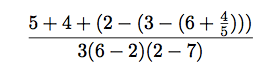
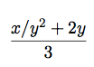

sicp-chapter-1
Table of Contents
1 Exercise 1.1.
Below is a sequence of expressions. What is the result printed by the interpreter in response to each expression? Assume that the sequence is to be evaluated in the order in which it is presented.
10 (+ 5 3 4) (- 9 1) (/ 6 2) (+ (* 2 4) (- 4 6)) (define a 3) (define b (+ a 1)) (+ a b (* a b)) (= a b) (if (and (> b a) (< b (* a b))) b a) (cond ((= a 4) 6) ((= b 4) (+ 6 7 a)) (else 25)) (+ 2 (if (> b a) b a)) (* (cond ((> a b) a) ((< a b) b) (else -1)) (+ a 1))
10 12 8 3 6 19 #f 4 16 6 16
2 Exercise 1.2.
Translate the following expression into prefix form

(/ (+ 5 4 (- 2 (- 3 (+ 6 (/ 4 5))))) (* 3 (- 6 2) (- 2 7)))
-37/150
3 Exercise 1.3.
Define a procedure that takes three numbers as arguments and returns the sum of the squares of the two larger numbers.
(define (bigger x y) (if (> x y) x y)) (define (smaller x y) (if (< x y) x y)) (define (bigger-sum a b c) (+ (sqr (bigger a b)) (sqr (bigger (smaller a b) c)))) (bigger-sum 1 2 3)
13
4 Exercise 1.4.
Observe that our model of evaluation allows for combinations whose operators are compound expressions. Use this observation to describe the behavior of the following procedure:
(define (a-plus-abs-b a b) ((if (> b 0) + -) a b)) (a-plus-abs-b 1 1) (a-plus-abs-b 1 -1)
2 2
定义了一个函数 a-plus-abs-b，有两个参数 a b
(if (> b 0) + -)
如果 b 大于 0，那么返回 +，否则返回 -
这里把操作符做为函数的返回值
(op a b)
5 Exercise 1.5.
Ben Bitdiddle has invented a test to determine whether the interpreter he is faced with is using applicative-order evaluation or normal-order evaluation. He defines the following two procedures:
(define (p) (p)) (define (test x y) (if (= x 0) 0 y))
Then he evaluates the expression
(test 0 (p))
What behavior will Ben observe with an interpreter that uses applicative-order evaluation? What behavior will he observe with an interpreter that uses normal-order evaluation? Explain your answer. (Assume that the evaluation rule for the special form if is the same whether the interpreter is using normal or applicative order: The predicate expression is evaluated first, and the result determines whether to evaluate the consequent or the alternative expression.)
applicative-order: 会在参数传递前进行表达式的执行，即： (test 0 (p))
此时会先分别对表达式 0，(p) 分别求值，表达式 (p) 展开求值进入死循环
normal-order: 会在用到参数时才进行求值，先将 0 和 (p) 带入 (test x y)
此时判断 (if (= x 0) 0 (p)) 先执行 (= x 0) 即: (= 0 0)，直接返回 0 并不再执行(p)
6 Exercise 1.6.
Alyssa P. Hacker doesn't see why if needs to be provided as a special form. ``Why can't I just define it as an ordinary procedure in terms of cond?'' she asks. Alyssa's friend Eva Lu Ator claims this can indeed be done, and she defines a new version of if:
(define (new-if predicate then-clause else-clause) (cond (predicate then-clause) (else else-clause))) ; Eva demonstrates the program for Alyssa: (new-if (= 2 3) 0 5) (new-if (= 1 1) 0 5)
5 0
Delighted, Alyssa uses new-if to rewrite the square-root program:
(define (sqrt-iter guess x) (new-if (good-enough? guess x) guess (sqrt-iter (improve guess x) x)))
What happens when Alyssa attempts to use this to compute square roots? Explain.
这里的 new-if 是一个普通的函数，在函数调用时会先对其参数进行求值，
这里 new-if 的两个参数分别是函数调用 (goo-enough) 和 (sqrt-iter)，对两个分别进行 求值计算就导致陷入了 (sqrt-iter) 的无限循环内
书上有写：
(if <predicate> <consequent> <alternative>) 的求值顺序是从 <predicate> 开始，
如果 <predicate> 得到真值，解释器会去求值 <consequent> 并返回其值，
否则它就去求值 <alternative> 并返回其值
(if #t (display "hello") (display "world"))
hello
(define (new-if predicate then-clause else-clause) (cond (predicate then-clause) (else else-clause))) (new-if #t (display "hello") (display "world"))
helloworld
牛顿法求平方根的算法:
(define (abs x) (if (< x 0) (- 0 x) x)) (define (square x) (* x x)) (define (good-enough? guess x) (display (format "~a\n" guess)) (< (abs (- (square guess) x)) 0.0001)) (define (improve guess x) (/ (+ guess (/ x guess)) 2)) (define (sqrt-iter guess x) (if (good-enough? guess x) guess (sqrt-iter (improve guess x) x))) (define (sqrt x) (sqrt-iter 1.0 x)) (sqrt 9) (sqrt 0.0000000000000000000009)
1.0 5.0 3.4 3.023529411764706 3.00009155413138 3.000000001396984 3.000000001396984 1.0 0.5 0.25 0.125 0.0625 0.03125 0.015625 0.0078125 0.0078125
7 Exercise 1.7.
The good-enough? test used in computing square roots will not be very effective for finding the square roots of very small numbers. Also, in real computers, arithmetic operations are almost always performed with limited precision. This makes our test inadequate for very large numbers. Explain these statements, with examples showing how the test fails for small and large numbers. An alternative strategy for implementing good-enough? is to watch how guess changes from one iteration to the next and to stop when the change is a very small fraction of the guess. Design a square-root procedure that uses this kind of end test. Does this work better for small and large numbers?
针对非常小的数字，我们可以使用优化 good-enough 函数来解决
(define (abs x) (if (< x 0) (- 0 x) x)) (define (square x) (* x x)) (define (good-enough? old-guess new-guess) (display (format "~a\n" old-guess)) (< (/ (abs (- new-guess old-guess)) old-guess) 0.0001)) (define (improve guess x) (/ (+ guess (/ x guess)) 2)) (define (sqrt-iter guess x) (let ((new-guess (improve guess x))) (if (good-enough? guess new-guess) guess (sqrt-iter new-guess x)))) (define (sqrt x) (sqrt-iter 1.0 x)) (sqrt 0.0000000000000000000009)
1.0 0.5 0.25 0.125 0.0625 0.03125 0.015625 0.0078125 0.00390625 0.001953125 0.0009765625000000002 0.0004882812500000005 0.0002441406250000012 0.00012207031250000244 6.10351562500049e-05 3.0517578125009826e-05 1.5258789062519658e-05 7.629394531289321e-06 3.814697265703643e-06 1.9073486329697864e-06 9.536743167208228e-07 4.768371588322706e-07 2.384185803598537e-07 1.1920929206736365e-07 5.960464980855534e-08 2.9802332454024236e-08 1.4901181326501416e-08 7.450620862198706e-09 3.725370828750545e-09 1.8628062077192604e-09 9.316446748819594e-10 4.663053542092095e-10 2.341177099868953e-10 1.1898096502957087e-10 6.327260009878856e-11 3.8748383309721934e-11 3.098757940327563e-11 3.001573716141363e-11 3.000000412547338e-11 3.000000412547338e-11
8 Exercise 1.8.
Newton's method for cube roots is based on the fact that if y is an approximation to the cube root of x, then a better approximation is given by the value

Use this formula to implement a cube-root procedure analogous to the square-root procedure.
(In section 1.3.4 we will see how to implement Newton's method in general as an abstraction of these square-root and cube-root procedures.)